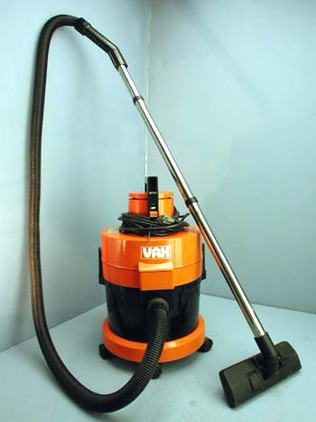

 OpenBSD/vax fonctionne sur une large gamme de machines VAX fabriquées par Digital (puis Compaq, et puis maintenant Hewlett-Packard).
Une liste de diffusion dédiée au port OpenBSD/vax est disponible à vax@openbsd.org.Pour vous inscrire à la liste de diffusion OpenBSD/vax, envoyez un message dont le corps contient "subscribe vax" à majordomo@openbsd.org. Veuillez lire notre politique des listes de diffusion avant de vous inscrire.
Les mainteneurs actuels du port sont Brandon Creighton et Hugh Graham. Si d'autres personnes souhaitent contribuer, elles sont bien entendu les bienvenues !
VAX a figuré parmi les architectures supportés par OpenBSD depuis le début de l'année 2000, quand le code a été synchronisé avec le code du port NetBSD. Vu qu'elles sont la seconde architecture à supporter BSD Unix (en 1979 !), il paraît approprié que ces vénérables VAX aient un système d'exploitation moderne.
La base du code actuel est en grande partie du code Berkeley, avec la contribution de code libre de la part de Digital, Mt Xinu, NetBSD, OpenBSD et d 'autres.
Après la synchronisation du port avec la base de code NetBSD, des correctifs et des améliorations fûrent apportés, tels que le support de 16 partition par disque, le support d'autres modèles VAX, une meilleure émulation des instructions non implémentées, etc.
Le développement se poursuit et les modifications sont partagées entre les hackers VAX jusqu'à ce jour. Le résultat de ce travail est un système d'exploitation stable et familier à tout utilisateur OpenBSD.
A l'heure actuelle, tout le matériel listé dans la section matériel supporté ci-dessous démarre en multi-utilisateur, et supporte assez de périphériques embarqués pour être généralement utilisable. Cependant, quelques modèles ne peuvent fonctionner qu'en "diskless" pour l'instant.
Vu qu'aucun des framebuffers VAXstation n'est actuellement supporté, aucun serveur X Window n'est disponible pour le moment. Cependant, un jeu complet de clients X et d'utilitaires est disponible, permettant aux machines OpenBSD/vax de se comporter comme serveurs de polices X11 ou de fonctionner comme clients X sur un affichage distant.
Il reste encore quelques problèmes dans le port OpenBSD/vax :
La liste du matériel supporté ci-après n'est pas destinée à être exhaustive. A cause d'un inventaire de systèmes limité disponible pour les développeurs, toutes les combinaisons matérielles n'ont pas été testées.
Par conséquence, OpenBSD/vax fonctionne peut être sur votre matériel, même s'il n'est pas listé içi. Nous comptons sur vos tests et retours d'expérience pour garder cette liste à jour. Après avoir terminé votre installation de votre nouveau système, MERCI de bien vouloir nous faire parvenir votre dmesg à l'adresse dmesg@openbsd.org.
La plupart des périphériques intégrés sont supportés sur ces modèles, excepté les framebuffers et les interfaces clavier. Le contrôleur SCSI est uniquement supporté s'il est listé.
La dernière version supportée d'OpenBSD/vax est la version OpenBSD 3.5. Voici les instructions d'installation d'OpenBSD/vax 3.5.
Des snapshots sont mis à disposition de temps à autre, à cet endroit ainsi que sur quelques miroirs. Voici de même les instructions d'installation d'OpenBSD/vax snapshot.
{kind=link}